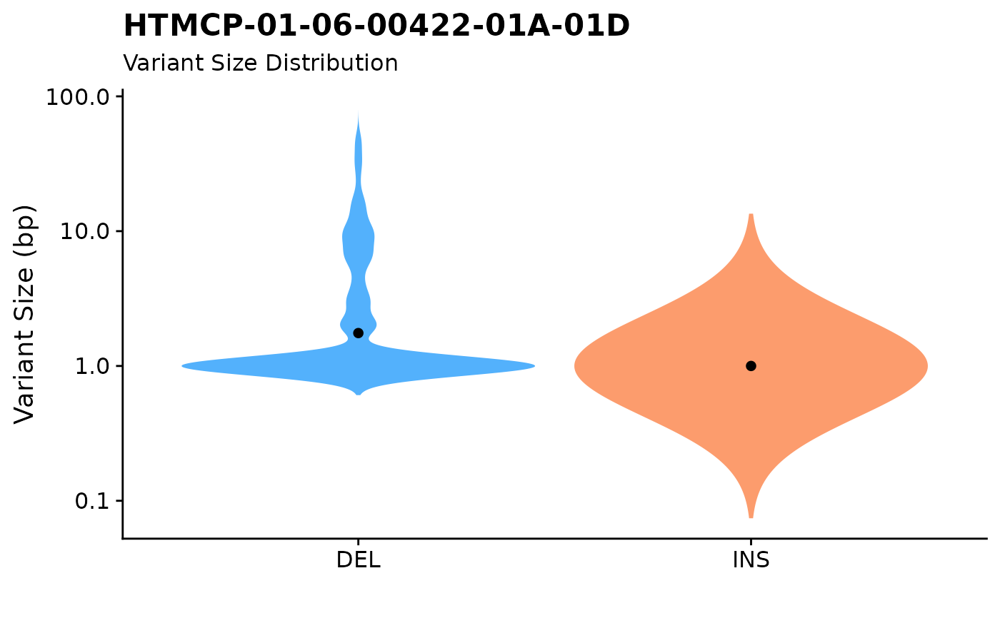

fancy_v_sizedis.RdGenerate a violin plot showing variant (SSM or SVs) size distributions for selected contigs.
fancy_v_sizedis(
this_sample_id,
maf_data,
maf_path = NULL,
ssm = TRUE,
projection = "grch37",
min_vaf = 0,
variant_type_col = 10,
chromosome_col = 5,
start_col = 6,
end_col = 7,
plot_title = paste0(this_sample_id),
plot_subtitle = "Variant Size Distribution",
scale_value = "width",
log_10 = TRUE,
plot_trim = FALSE,
chr_select = paste0("chr", c(1:22)),
coding_only = FALSE,
from_flatfile = TRUE,
use_augmented_maf = TRUE
)Sample to be plotted.
Optional parameter with maf like df already loaded into R.
Optional parameter with path to external maf like file.
Set to FALSE to get plotting data from get_combined_sv (SVs). Default value is TRUE (plots SSM retrieved from annotate_cn_by_ssm$maf).
Genome build for returned variants (only applicable for ssm = FALSE).
The minimum tumour VAF for a SV to be returned. Recommended: 0 (only applicable for ssm = FALSE).
Index of column holding Variant Type (to be used with either maf_data or maf_path).
Index of column holding Chromosome (to be used with either maf_data or maf_path).
Index of column with variant start coordinates (to be used with either maf_data or maf_path).
Index of column with variant end coordinates (to be used with either maf_data or maf_path).
Title of plot (default to sample ID).
Subtitle for created plot.
Scale type for violin plot, accepted values are "area", "width", and "count", default is "count.
Boolean statement for y-axis, default is TRUE.
If TRUE, trim the tails of the violins to the range of the data. If FALSE (default), don't trim the tails.
vector of chromosomes to be included in plot, defaults to autosomes.
Optional. Set to TRUE to restrict to plotting only coding mutations.
If set to true the function will use flat files instead of the database.
Boolean statement if to use augmented maf, default is FALSE.
A plot as a ggplot object (grob).
Function for plotting variant size distributions. This function takes either a sample ID given to the this_sample parameter.
In addition, the function can also accept an already loaded MAF or MAF-like object given to the maf_data parameter.
As a third option, the function can also read a maf from disk (provide path to maf with maf_path).
A collection of convenient filtering and data subsetting parameters are also available for this function.
For restricting your data (if plotting data retrieved with this_sample_id), the user can choose to only plot coding mutations with setting coding_only to TRUE.
This plot can also deal with SVs as well as SSM data. To control this, please use the ssm parameter. If set to TRUE and if this_sample is called,
the function gets data with annotate_cn_by_ssm and if set to FALSE, the function calls get_combined_sv to get SV calls for plotting.
If the user calls either maf_data or maf_path, there are a collection of parameters available for specifying
the relevant columns in the given data frame (variant_type_col, chhromosome_col, start_col, end_col). It is also possible to
restrict the returned plot to any given chromosome. This is done with the chr_select parameter (default is all autosomes).
In addition, plot aesthetics can also be controlled with plot_title, plot_subtitle, scale_value, log10, and trim.
For more info on how to run with these parameters, refer to the parameter descriptions.
#plot SSM size distributions:
fancy_v_sizedis(this_sample_id = "HTMCP-01-06-00422-01A-01D")
#> trying to find output from: battenberg
#> looking for flatfile: /projects/nhl_meta_analysis_scratch/gambl/results_local/gambl/battenberg_current/99-outputs/seg/genome--projection/HTMCP-01-06-00422-01A-01D--HTMCP-01-06-00422-10A-01D--matched.battenberg.grch37.seg
